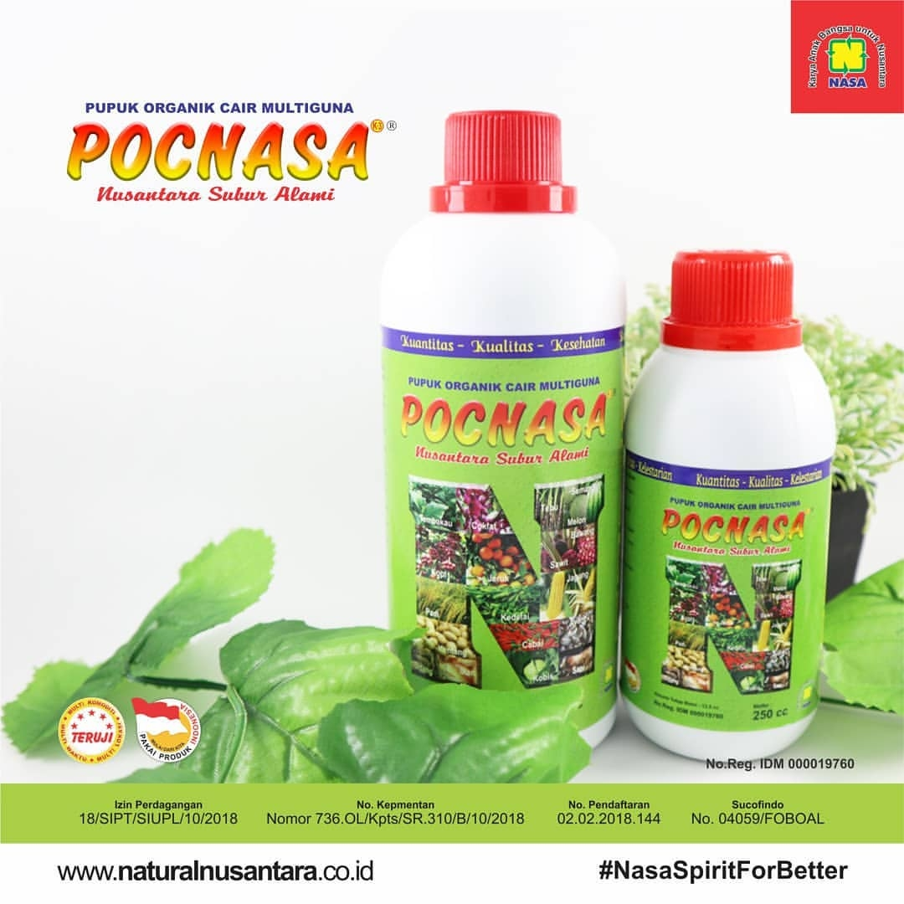
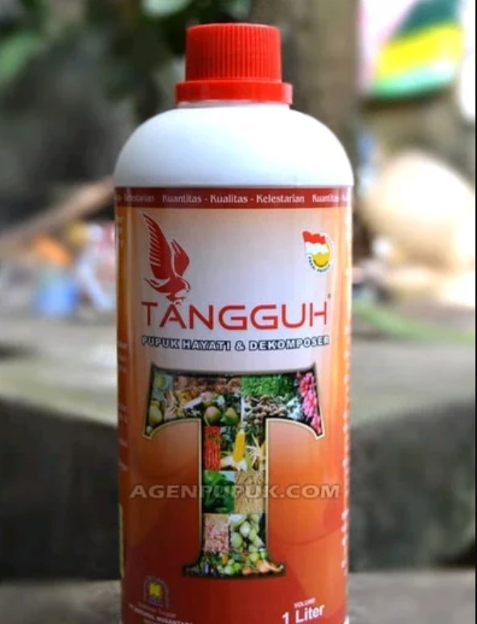

Produk Terbaik
Power Nutrition
incididunt ut labore et dolore magna aliqua. Ut enim ad minim veniam, quis nostrud exercitation
Pupuk Organik POP SUPERNASA untuk Mnyuburkan tanaman dan cepat berbuah

POC NASA merupakan produk pupuk organik cair multiguna yang diproses dengan formula khusus dan dibuat dari bahan dasar alami (organik) yang multiguna untuk tanaman, peternakan dan perikanan.
Hormonik NASA kemasan 100 ml. Hormonik merupakan singkatan dari Hormon Organik. Hormon atau zat pengatur tumbuh (ZPT) adalah senyawa organik bukan hara/nutrisi yang diberikan pada tanaman dan bisa pula pada hewan ternak/unggas.

Power Nutrition adalah nutrisi terlengkap khusus digunakan untuk tanaman buah.

GREENSTAR NASA PUPUK TANAMAN HIAS / PUPUK ORGANIK MENYUBURKAN TANAMAN / MEMPERCEPAT PERTUMBUHAN

TANGGUH Pupuk Hayati & Dekomposer, Salah satu produk terbaru dari NASA PT Natural Nusantara bersamaan dengan TANGGUH Probiotik yang akan membantu petani dalam meningkatkan hasil produksinya dengan tetap memenuhi standar Kuantitas, Kualitas dan Kelestarian (K3). Produk Pupuk Hayati ini murni terbuat dari bahan-bahan alami ramah lingkungan sehingga aman untuk lingkungan dan manusia.
merupakan pupuk organik dengan kandungan lengkap. Dapat meningkatkan kuantitas dan kualitas produksi tanaman, meningkatkan daya tahan tanaman karena kecukupan nutrisi yang dibutuhkan, dan melarutkan sisa-sisa pupuk kimia dalam tanah, sehingga dapat dimanfaatkan tanaman kembali
AERO 810 Nasa adalah salah satu produk pestisida organik PT Natural Nusantara berupa perata, pembasah, perekat, terutama bagi pestisida (insektisida-fungisida-herbisida) dan juga sebagai pupuk organik cair
Pupuk BINTANG TANI memiliki lebih banyak unsur-unsur yang dibutuhkan tanaman, dikemas dalam botol plastik volume 1 liter, mempunyai kandungan unsur hara mikro lengkap, pupuk ini sungguh luar biasa. Harga pupuk BINTANG TANI sangat sebanding dengan mutunya dan kualitas bukan abal-abal

Natural GLIO (Gliocladium) adalah salah satu produk pestisida organik pengendali penyakit tanaman dari PT. Natural Nusantara. Natural GLIO dapat digunakan untuk menghancurkan inokulum atau sumber infeksi penyakit bagi tanaman serta mencegah penyebaran sumber infeksi penyakit dengan kolonisasi tanah

Corrin Nasa sendiri merupakan salah satu produk pertanian berupa pestisida biologi yang diproduksi oleh PT. Natural Nusantara atau yang dikenal dengan NASA. Produk ini dibuat berdasarkan adanya bakteri yang menganggau budidaya tanaman, yaitu Corynebacterium yang ampuh dan efektif untuk mengendalikan penyakit-penyakit utama pada tanaman padi dan tanaman sayuran

Natural Pentana Nasa adalah salah satu produk pertanian produksi dari PT. Natural Nusantara yang digunakan sebagai alternatif pengendali hama yang efisien, efektif dan ramah lingkungan

Pupuk organik didefinisikan sebagai pupuk yang sebagian atau seluruhnya berasal dari dari tanaman dan atau hewan yang telah melalui proses rekayasa, dapat berbentuk padat atau cair yang digunakan mensuplai bahan organik untuk memperbaiki sifat fisik, kimia dan biologi tanah (Peraturan Menteri Pertanian Nomor 2 Tahun 2006). Pupuk organik mempunyai beragam jenis dan varian. Jenis-jenis pupuk organik dibedakan dari bahan baku, metode pembuatan dan wujudnya. Dari sisi bahan baku ada yang terbuat dari kotoran hewan, hijauan atau campuran keduanya
Power Nutrition
2020 All Rights Reserved. Design by Free html Templates